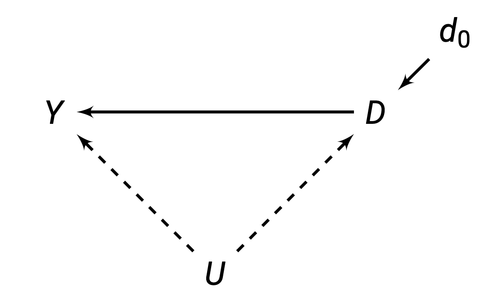
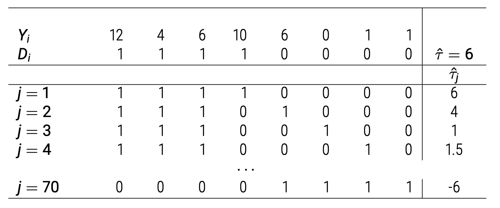
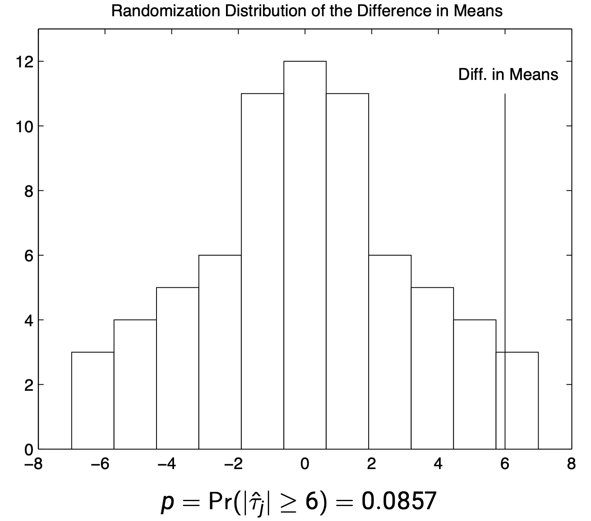

Randomised Controlled Trials
Chapter 5, Quantitative Methods (Causal Inference)
Up until now, we have focused on theory of statistics and causal inference. But now, we are ready to dive into methodology - different designs to measure and identify causal effects.
This chapter introduces the “gold standard” of causal inference: randomised controlled trials. This chapter also covers extensions, such as stratified experiments and survey experiments.
Use the right sidebar for quick navigation.
Randomisation
Randomised Experiments
Experiments are a research design where the assignment mechanism is controlled by the researcher.
Randomised Experiments use randomisation as the assignment mechanism. Treatment values are assigned to \(N\) units at random, with both known and positive probabilities of being assigned to treatment and control groups.
Quick notation for randomised experiments:
- We have \(N\) total number of units in our experiment.
- A randomly subset of \(N_1\) units are assigned to treatment \(D = 1\).
- The remaining \(N_0 = N - N_1\) are assigned to control.
\(N_1\), the number of individuals assigned to treatment, does not necessarily need to be 50% (although this is quite a common number).
Also note that when you fix the number of units to be treated at \(N_1\), technically, not all units have an independent probability of being selected. This is because once you have assigned \(N_1\) individuals to treatment, we know the remaining individuals must be assigned to control. This usually is not a huge issue.
You can use bernoulli randomisation (simple randomisation) to avoid this issue. Bernoulli gives every individual a certain chance of being selected. This does mean that with different randomisation trials, we will get different numbers of treated individuals for each trial.
Identification Assumptions
Randomisation implies that assignment probabilities do not depend on the potential outcomes. The potential outcome values do not affect our chances of being selected for treatment.
\[ Pr(D=1|Y_0, Y_1) = Pr(D=1) \]
Or in other words, treatment is independent of potential outcomes (also unconfounded or ignorability):
\[ (Y_1, Y_0) \perp\!\!\!\!\perp D \]
This implies that \(E(Y_{0i})\) is the same between treatment and control groups, and \(E(Y_{1i})\) is also the same between treatment and control:
\[ \begin{split} & E(Y_{0i} | D_i = 1) = E(Y_{0i} | D_i = 0) = E(Y_{0i})\\ & E(Y_{1i} | D_i = 1) = E(Y_{1i} | D_i = 0) = E(Y_{1i}) \end{split} \tag{1}\]
Proof of Identification
Let us return to our naive estimator, and our problem of selection bias. Using the above property in Equation 1, we can simplify:
\[ \begin{align} & \underbrace{E(Y_{1i}|D_i = 1)- E(Y_{0i}|D_i = 1)}_{\tau_{ATT}} + \underbrace{E(Y_{0i}|D_i = 1) - E(Y_{0i} | D_i = 0)}_{\text{Selection Bias}} \\ & = \underbrace{E(Y_{1i}|D_i = 1)- E(Y_{0i}|D_i = 1)}_{\tau_{ATT}} + \underbrace{E(Y_{0i}) - E(Y_{0i})}_{\text{Selection Bias}} && (\because \text{eq. (1)} \ )\\ & = \underbrace{E(Y_{1i}|D_i = 1)- E(Y_{0i}|D_i = 1)}_{\tau_{ATT}} + 0 \end{align} \]
Thus, under randomisation, selection bias is equal to 0, and thus our comparison of observed outcomes is now an unbiased estimator of \(\tau_{ATT}\). Now look at the formula for the ATT estimand. We can simplify as follows using Equation 1:
\[ \begin{align} \tau_{ATT} & = E(Y_{1i} -Y_{0i}|D_i = 1)\\ & = E(Y_{1i} |D_i = 1) - E(Y_{0i} | D_i = 1) \\ & = E(Y_{1i} ) - E(Y_{0i}) && (\because \text{equation (1)} \ )\\ & = \underbrace{E(Y_{1i} - Y_{0i})}_{\tau_{ATE}} \end{align} \]
And now we see that \(\tau_{ATT}\) and \(\tau_{ATE}\) are equivalent under randomisation, and we can identify the \(\tau_{ATE}\) with our observed data.
Let us look at a direct acyclic graph:

Because we are randomly assigning treatment \(D\), we are exogenously determining \(D\). Thus, values of \(D\) are not being caused by \(U\), they are being caused by randomisation.
Thus, we can eliminate the arrow between \(U \rightarrow D\). This allows us to estimate \(D \rightarrow Y\) without any confounders.
The Balancing Property
Randomisation balances all observed and unobserved pre-treatment characteristics between units between the treatment and control.
This is because not only is \((Y_1, Y_0) \perp\!\!\!\!\perp D\), but also any covariate \(X\) is also independent of treatment: \(X \perp\!\!\!\!\perp D\).
This means that if randomisation is successful, we should expect minimal differences between control and treatment groups for all pre-treatment characteristics values.
In any one sample, we actually are likely to have some imbalances in \(X\) between control and treatment simply due to chance.
- You could control for imbalanced covariates, but you do not have to (we will discuss this later).
You can adopt other randomisation procedures, such as stratified randomisation, to guarantee balance on \(X\).
We can test this assumption by finding the average \(X\) values for both control and treatment groups, and see if there are any statistical significant differences in \(X\) between control and treatment. This is typically done with a t-test or a regression:
\[ X_i = \alpha + \gamma D_i + u_i \quad \text{test if } \gamma \text{ is significant} \]
Complications and Limitations
Randomisation can be complicated by a few factors:
- Missing data (often due to individuals dropping out). We are concerned that there is some covariate that is causing some people to drop out, which re-introduces selection bias.
- Measurement Problems: Hawthorne Effect - subjects know what you are studying, and will change their behaviour as a result.
- Non-Compliance: Some units assigned to treatment might not take the treatment, and some units assigned to control may take the treatment (this can often be dealt with by using an instrumental variable design).
Randomisation does not help with external validity - the ability to extrapolate our results to external situations.
External validity asks if we can generalise our conclusions from our subjects, to other subjects outside our experiment. Can we extrapolate our estimates to to other populations?
For example, if we measured the effect of migration on tolerance for our subjects in India, can we say the same effect is true of someone in Japan, the US, or Europe?
This is important - if we cannot extrapolate, some results may be very niche.
To extrapolate to a greater population, our actual sample of observations in our experiment, should be representative of the greater population. This is often violated, as random sample for experiments is very very difficult.
This is called 𝑋-Validity: we can study this with data - to see how representative our population is compared to the population.
Non-representative programme of treatment is another threat: Sometimes, treatments will differ between areas.
For example, if we are encouraging people to migrate to test how that changes their tolerance, how are the governmental/ngo/private agencies working with you affecting the process. Would less capable agencies create different effects?
This is called \(C\)-validity, and we cannot measure this with data, unless you redo your experiment in another context.
Causal Estimation
Difference in Means Estimator
Our causal estimand is the Average Treatment Effect (ATE):
\[ \tau_{ATE} = E(Y_{1i}) - E(Y_{0i}) \]
We can estimate this using the difference-in-means estimator, by taking the sample mean \(Y\) of the treatment group, minus the sample mean \(Y\) of the control group:
\[ \hat\tau_{ATE} = \bar Y_1 - \bar Y_0 \]
This is an unbiased estimator because selection bias is eliminated with randomisation. This is also an asymptotically consistent estimator due to the law of large numbers.
Ordinary Least Squares Estimator
We can also estimate the \(\tau_{ATE}\) with a bivariate regression:
\[ Y_i = \hat\gamma + \hat\tau D_i + \hat\epsilon_i \]
Here, \(\hat\tau\) is our estimator of the ATE. This gives the same estimate as the difference-in-means estimator.
Remember that OLS is the best approximation of the conditional expectation function \(E(y|x)\).
Thus, we can write the regression as:
\[ E(Y_i|D_i) = \hat\gamma + \hat\tau D_i + \hat\epsilon_i \]
Now, let us find the difference between treatment \(E(Y_i|D_i =1)\) and control \(E(Y_i|D_i = 0)\):
\[ \begin{split} & E(Y_i|D_i = 1) - E(Y_i|D_i = 0) \\ = & \ \hat\gamma + \hat\tau(1) - (\hat\gamma + \hat\tau(0)) \\ = & \ \hat\gamma + \hat\tau - \hat\gamma \\ = & \ \hat\tau \end{split} \]
Thus, the difference in means is equivalent to \(\hat\tau\) regression coefficient.
Furthermore, \(\hat\gamma\) is equivalent to the average \(Y\) in the control group \(\bar Y_0\).
We do not need to include covariates. This is because randomisation allows us to meet the asymptotic consistency condition of both randomisation and exogeneity.
However, sometimes pre-treatment covariates are included. We should not include post-treatment covariates.
There are several reasons one might want to include pre-treatment covariates:
- Can increase precision (reduce standard error), by getting better predictions of \(Y\).
- Can control for observable imbalance that was observed in the balance tables. Many researchers will compare a model without and with an imbalanced covariate, to show that the covariate does not matter significantly.
- Can allow for estimation of heterogenous treatment effects by including interactions in the model.
There is one risk: it may introduce small-sample bias. This will be discussed later in the discussion of the fully-interacted estimator.
We should not include post-treatment covariates. Anything that is measured post-treatment could be measuring a treatment effect (something that results from the treatment). This may “model away” your treatment effect.
Statistical Inference
Standard Inference
We can use a t-test for statistical inference.
- Estimate the \(\hat\tau_{ATE}\) and robust standard error \(\widehat{rse}(\hat\tau_{ATE})\).
- State hypotheses, normally \(H_0 : \tau_{ATE} = 0\) and \(H_1 \tau_{ATE} ≠ 0\).
- Calculate the t-test statistic \(\hat\tau /\widehat{rse}(\hat\tau)\).
- Refer to the relevant t-distribution, and calculate the p-value.
Generally, we use a statistical significance level of \(\alpha = 0.05\), so we reject the null if \(|t|>1.96\).
For more complex randomisation schemes, you will need different standard errors. For example, if you use a cluster randomisation scheme, you might need clustered standard errors.
We can also use Nonparametric Bootstrap to create our sampling distribution for statistical inference, instead of relying on asymptotic normality of the standard t-test.
For blocked experiments, you should randomly sample blocks, not units, to create your bootstrap re-samples.
For example, if your data is clustered in cities, you should re-sample by cities.
Randomisation Inference
Consider a new sharp null hypothesis, that all individual causal effects are zero (not just the average causal effect):
\[ H_0^s : Y_1 = Y_0, \quad H_A^s : Y_1 ≠ Y_0 \]
Assuming \(H_0\) is true, we can actually fully construct the potential outcomes \(Y_{0i}\) and \(Y_{1i}\), since we know every unit has 0 individual treatment effect.
Once constructed, we can imagine what different treatments we would observe under different randomization schemes (given \(H_0\) is true). Thus, we can construct the sampling distribution, so we do not need to “imagine” a hypothetical sampling distribution.
Procedure for conducting randomisation inference (also called permutation test or Fisher’s exact test) is as follows:
- Calculate the total number of randomisations possible. This is calculated as a permutation of \(_NP_{N_1}\) (\(N\) choose \(N_1\)).
- Calculate and store the value of \(\widehat{\tau_j}\) of each permuted dataset \(j\). Thus, we will have a distribution of \(\widehat{\tau_j}\).
- Calculate \(p\)-value as the proportion of \(\widehat{\tau_j}\) that are as or more extreme than the actually observed \(\hat\tau\).
If we have \(N\) total units, and \(N_1\) in the treatment group and \(N_0\) in the control group, we can calculate all possible randomisation permutations as follows:
\[ \begin{pmatrix} N \\ N_1 \end{pmatrix} = \frac{N!}{N_1 ! N_0 !} \]
This is the total number of assignments possible given \(N\), \(N_1\), and \(N_0\).
Then, we can calculate the \(\widehat{\tau_j}\) of every possible randomisation assignment. The figure below shows this:

Now, plot all \(\widehat{\tau_j}\) in a distribution:

Let us say our sample \(\hat\tau = 6\). We would simply find the area under the curve that is above \(\hat\tau = 6\), and below \(-\hat\tau = -6\).
Randomisation Inference is assumption free - we do not need asymptotic properties or hypothetical sampling distributions.
Since we also do not need asymptotic property inferences, we can do inference with very small samples as well.
Downsides: the randomisation inference only tests if the sharp null hypothesis is true, but sometimes, that might not be something we want to test.
Other Randomisation Procedures
Stratified Randomisation
Stratified (also called blocked or conditional) randomisation are when randomisation occurs separately within levels of some covariates(s) \(X\). Generally, you separate your sample of \(N\) units into \(J\) subgroups.
For example, you could split people up into male or female, and random sample within each group, rather than everyone together.
Let us say you have 4 subjects, with pre-treatment potential outcomes of \(Y_{0i} = \{2, 2, 8, 8 \}\).
If you just randomly assign, then there is a 33% chance that you end up with the random assignment where \(\{8, 8\}\) are placed in one group, and \(\{2, 2\}\) are placed in another group.
This is a concern: our treatment and control groups would be very imbalanced in this situation, which violates our independence assumption.
With blocking, we could divide our sample into \(J = 2\) subgroups, having group 1 being \(\{2, 2\}\), and group 2 being \(\{8, 8\}\). Then, we randomly sample one from each group into the treatment. This way, we are guaranteed better balance.
This can prevent imbalances as normal randomisation can have a high probability (in certain situations) of creating imbalances.
To estimate the ATE, you will need a weighted average of the ATE for each subgroup \(j\), with the weights being the proportion of units each group \(j\) accounts for:
\[ \tau_{ATE} = \sum\limits_{j=1}^J \frac{N_j}{N} \tau_j \]
Cluster Randomisation
Cluster randomisation is when we randomly assign units (or have individuals naturally) in groups. Every unit within a group (called a cluster) will get the same treatment. We randomly sample the groups to get the treatment or control.
For example, we could randomise development treatment at the village level, or randomise treatment of a cirriculum at the school level.
The main reason for this is to prevent SUTVA violations.
For example, imagine you are testing the effects of a new curriculum. If you randomise by each student, students will talk to their friends, and treated individuals may teach control individuals about the new curriculum. But by randomising by school (either an entire school gets or does not get the new curriculum), this concern is not a huge issue.